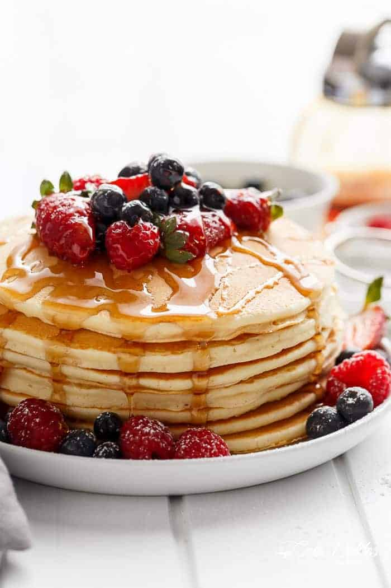

Easy Pancakes
Home

Easy shmeazy
This easy pancake recipe doesn't require much thought early in the morning and the pancakes taste great
How to make Easy Pancakes
You likely already have all the ingredients you'll need to make this easy pancake recipe:
- Flour: This quick pancake recipe starts with a cup of all_purposed flour
- Sugar: You'll need two tablespoons of white sugar
- Baking powder: Baking powder acts as a leavening agent, ensuring perfectly fluffy pancakes
- Salt: Salt enhaces the overall flavor of the pancakes, but it won't make the pancakes taste salty
- Milk and oil: Milk and oil add moisture and flavor to the pancake batter
- Egg: A beaten egg lends more moisture and helps bind the batter together
- Syrup and forest fruit: These two are just the cherry on the top, so to say, totally your choise
How do you make Easy Pancakes?
Here's a brief overview of what you can expect when you make quick and easy pancakes at home
- Combine the dry ingredients
- Add the wet ingredients and mix
- Pour or ladle the batter onto the oiled griddle or pan
- Cook until bubbles form, flip, and cook on the other side